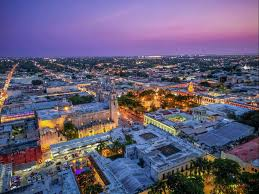
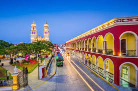
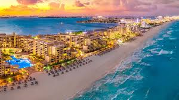
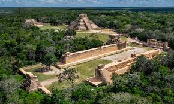
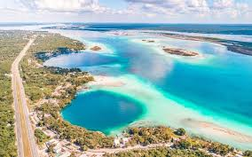

Imágenes representativas





¿Sabías esto de la Península de Yucatán?
La península de Yucatán está conformada por tres estados: Campeche, Yucatán y Quintana Roo. Es una región rica en historia maya, biodiversidad y bellezas naturales. Además de sus playas cristalinas, selvas y cenotes, también es conocida por su deliciosa gastronomía, como la cochinita pibil, el pan de cazón y los mariscos del Caribe.
En su territorio se encuentran algunas de las zonas arqueológicas más importantes de México, como Chichén Itzá (una de las 7 maravillas del mundo moderno), Uxmal, Ek Balam y Calakmul. También cuenta con sitios naturales como la Laguna de Bacalar y la Reserva de la Biósfera de Sian Ka'an.